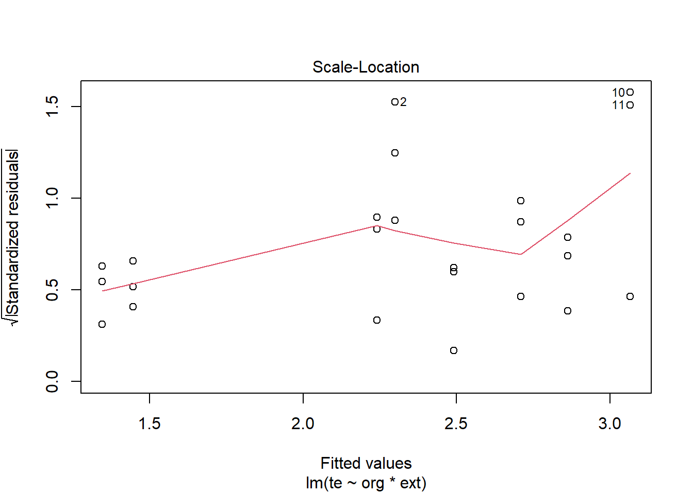

Chapitre 2 Touré, 2021
Variables explicatives :
org, pour organeext, pour extraction
Variables expliquées :
gaepour mg GAE/g, => Gallic acid equivalentqepour mg QE/g, => Quercetin equivalenttepour μmol T.E/g => Trolox equivalent
Comparer les effets des variables explicatives sur chacune des variables dépendantes en tenant compte de l’interaction org * ext.
2.1 Les librairies R utilisées
2.2 Les données
Les données du tableau Excel sont formatées dans un tableau csv dorg.csv pour R.
df <- read_csv("data/dorg.csv")
df <- df %>%
add_column(id = 1:nrow(.), .before = 1) %>%
mutate(org = factor(org),
ext = factor(ext))## Rows: 24
## Columns: 6
## $ id <int> 1, 2, 3, 4, 5, 6, 7, 8, 9, 10, 11, 12, 13, 14, 15, 16, 17, 18, 19,~
## $ org <fct> Feuilles, Feuilles, Feuilles, Feuilles, Feuilles, Feuilles, Tronc,~
## $ ext <fct> Maceration, Maceration, Maceration, Decoction, Decoction, Decoctio~
## $ gae <dbl> 9.875, 9.966, 9.694, 14.224, 15.221, 14.587, 8.969, 9.604, 9.785, ~
## $ qe <dbl> 0.552, 0.552, 0.492, 0.600, 0.636, 0.552, 0.612, 0.684, 0.612, 0.7~
## $ te <dbl> 2.517, 1.974, 2.408, 2.777, 2.884, 2.929, 2.816, 2.740, 2.574, 2.7~2.3 Gallic acid equivalent (gae)
2.3.1 Exploration visuelle, boxplots
2.3.2 Moyennes et intervalles de confiance
En considérant le regroupement (les combinaisons des 2 facteurs org et ext).
## org ext N gae sd se ci
## 1 Feuilles Decoction 3 14.677333 0.50460116 0.29133162 1.2534988
## 2 Feuilles Maceration 3 9.845000 0.13845938 0.07993956 0.3439522
## 3 Poudre Decoction 3 1.117333 0.05253887 0.03033333 0.1305138
## 4 Poudre Maceration 3 1.117333 0.13802294 0.07968758 0.3428680
## 5 Racine Decoction 3 9.090333 0.75412355 0.43539344 1.8733468
## 6 Racine Maceration 3 6.281333 1.81276152 1.04659835 4.5031493
## 7 Tronc Decoction 3 11.687333 0.39459515 0.22781962 0.9802287
## 8 Tronc Maceration 3 9.452667 0.42853277 0.24741351 1.06453442.3.3 Visualisation de l’interaction éventuelle
p <- position_dodge(0.1) # pour éviter le chevauchement éventuel des points
ggplot(df_ic, aes(x = org, y = gae, colour = ext, group = ext)) +
geom_errorbar(aes(ymin = gae - ci, ymax = gae + ci), width =.1, position = p) +
geom_line(position = p, size = 1) +
geom_point(position = p, size = 2) +
ylab("mg Gallic acid equivalent /g") + xlab("Organe") +
theme_bw()Les profils se croisent, on pourrait s’attendre à ce que l’interaction soit significative.
2.3.4 Identification des valeurs aberrantes exrêmes
## [1] org ext id gae qe te is.outlier
## [8] is.extreme
## <0 rows> (or 0-length row.names)Les facteurs pris idividuellement ou avec interaction, aucune observation n’est identifiée comme extrême.
2.3.5 Le modèle
lm <- lm(gae ~ org * ext,
contrasts = list(org = contr.sum, ext = contr.sum),
data = df)
Anova(lm, type = 3)## Anova Table (Type III tests)
##
## Response: gae
## Sum Sq Df F value Pr(>F)
## (Intercept) 1501.10 1 2674.705 < 2.2e-16 ***
## org 433.19 3 257.293 9.569e-14 ***
## ext 36.58 1 65.172 4.929e-07 ***
## org:ext 17.78 3 10.559 0.0004498 ***
## Residuals 8.98 16
## ---
## Signif. codes: 0 '***' 0.001 '**' 0.01 '*' 0.05 '.' 0.1 ' ' 1L’effet de l’interaction est significatif. On ne devrait donc pas interpréter les effets des facteurs pris individuellement. Mais il faut d’abord vérifier les conditions de validité de l’ANOVA.
2.3.6 Vérification des hypothèses de validité
2.3.6.1 Indépendance des résidus
Plot des résidus vs fitted values : la valeur des résidus ne semble pas dépendre des groupes (croisements des 2 facteurs) puisqu’ils sont tous globalement centrés sur 0.
2.3.6.2 Normalité des résidus
Plot des résidus standardisés vs quantiles théoriques : Cette distribution rejette l’hypothèse de normalité. Certains points sont bien éloignés de la droite. Le test de Shapiro-Wilk (ci-dessous) confirme ce rejet. Peut-être exclure les 3 points améliorerait la distribution.
## # A tibble: 1 x 3
## variable statistic p.value
## <chr> <dbl> <dbl>
## 1 residuals(lm) 0.869 0.005072.3.6.3 Homogénéité des variances
Plot des résidus standardisés vs valeurs prédites : les dispersions des résidus relatives à chaque groupe (croisement des modalités des 2 facteurs) ne sont pas identiques. L’hypothèse d’homogénéité des résidus n’est aussi pas respectée.
ANOVA à 2 facteurs avec les conditions non valides : alternative => réaliser le test de Bartlett, ou de Levene, ou encore de Fligner-Killeen (un seul suffit !) en créant une variable de groupe org_ext qui est le croisement des modalités des 2 facteurs organe et exctraction :
df <- df %>%
mutate(org_ext = interaction(org, ext, sep = "_"))
df %>% sample_n_by(org, ext, size = 1) # visualiser la variable de groupe## # A tibble: 8 x 7
## id org ext gae qe te org_ext
## <int> <fct> <fct> <dbl> <dbl> <dbl> <fct>
## 1 6 Feuilles Decoction 14.6 0.552 2.93 Feuilles_Decoction
## 2 2 Feuilles Maceration 9.97 0.552 1.97 Feuilles_Maceration
## 3 22 Poudre Decoction 1.09 0.108 1.30 Poudre_Decoction
## 4 20 Poudre Maceration 1.09 0.126 1.47 Poudre_Maceration
## 5 18 Racine Decoction 9.69 0.456 2.34 Racine_Decoction
## 6 13 Racine Maceration 4.44 0.426 2.49 Racine_Maceration
## 7 12 Tronc Decoction 12.1 0.75 3.10 Tronc_Decoction
## 8 8 Tronc Maceration 9.60 0.684 2.74 Tronc_Maceration2.3.7 L’ANOVA à 1 facteur (org_ext)
## Anova Table (Type II tests)
##
## Response: gae
## Sum Sq Df F value Pr(>F)
## org_ext 487.55 7 124.1 9.757e-13 ***
## Residuals 8.98 16
## ---
## Signif. codes: 0 '***' 0.001 '**' 0.01 '*' 0.05 '.' 0.1 ' ' 1Test de Barlett
##
## Bartlett test of homogeneity of variances
##
## data: residuals(lm) by df$org_ext
## Bartlett's K-squared = 22.709, df = 7, p-value = 0.001915Test de Levene
## Levene's Test for Homogeneity of Variance (center = median)
## Df F value Pr(>F)
## group 7 1.9714 0.1236
## 16Test de Fligner-Killeen
##
## Fligner-Killeen test of homogeneity of variances
##
## data: residuals(lm) by df$org_ext
## Fligner-Killeen:med chi-squared = 6.3016, df = 7, p-value = 0.505Les 2 derniers tests valident l’hypothèse d’homogénéité des résidus. On va considérer ce modèle valide et que la nouvelle variable de groupe est le facteur à l’étude : l’organe associant le mode d’extraction.
L’ANOVA à un facteur montre un effet significatif de la variable org_ext (croisement des modalités des facteurs org et ext).
2.3.8 Comparaisons par paires
Les moyennes sont ensuite comparées 2 à 2 selon l’approche de Student - Newman - Keuls.
cm <- (SNK.test(lm, "org_ext", group = TRUE))$groups %>%
mutate(org_ext = rownames(.)) %>%
dplyr::select(org_ext, gae, groups) %>%
as_tibble()
cm## # A tibble: 8 x 3
## org_ext gae groups
## <chr> <dbl> <chr>
## 1 Feuilles_Decoction 14.7 a
## 2 Tronc_Decoction 11.7 b
## 3 Feuilles_Maceration 9.85 c
## 4 Tronc_Maceration 9.45 c
## 5 Racine_Decoction 9.09 c
## 6 Racine_Maceration 6.28 d
## 7 Poudre_Decoction 1.12 e
## 8 Poudre_Maceration 1.12 eIl est également possible de visualiser ces comparaions multiples sur un graphe.
Note :
Lorsque deux modalités partagent une même lettre, leurs différences ne sont pas significativement différentes.
A l’inverse, lorsque deux modalités ne partagent pas de lettres en commun, alors leurs moyennes sont significativement différentes.
On peut alors utiliser ces lettres pour les ajouter sur un graph réalisé avec ggplot2.
ggplot(cm, aes(x = org_ext, y = gae)) +
geom_bar(stat = "identity", color = "blue", fill = "grey", width = 0.6) +
ylim(0, 16) +
theme_bw() +
xlab("Croisement des 2 modalités") + ylab("mg Gallic acid equivalent /g") +
theme(axis.text.x = element_text(angle = 45, color = "black", vjust = 1, hjust = 1)) +
geom_text(aes(label = groups), vjust = -0.5, size = 4)2.4 Quercetin equivalent (qe)
La démarche est la même.
2.4.1 Exploration visuelle, boxplots
ggplot(df, aes(x = org, y = qe, colour = ext, fill = ext)) +
geom_boxplot(alpha = 0.5, position = position_dodge(width = 0.8), fatten = NULL) +
stat_summary(fun.y = mean, position = position_dodge(width = 0.8)) +
theme_bw() +
ylab("mg Quercetin equivalent /g") + xlab("Organe")
2.4.2 Moyennes et intervalles de confiance
## org ext N qe sd se ci
## 1 Feuilles Decoction 3 0.596 0.042142615 0.024331050 0.10468806
## 2 Feuilles Maceration 3 0.532 0.034641016 0.020000000 0.08605305
## 3 Poudre Decoction 3 0.104 0.018330303 0.010583005 0.04553500
## 4 Poudre Maceration 3 0.110 0.013856406 0.008000000 0.03442122
## 5 Racine Decoction 3 0.494 0.034117444 0.019697716 0.08475243
## 6 Racine Maceration 3 0.428 0.009165151 0.005291503 0.02276750
## 7 Tronc Decoction 3 0.736 0.029597297 0.017088007 0.07352376
## 8 Tronc Maceration 3 0.636 0.041569219 0.024000000 0.103263672.4.3 Visualisation de l’interaction probable
p <- position_dodge(0.1)
ggplot(df_ic, aes(x = org, y = qe, colour = ext, group = ext)) +
geom_errorbar(aes(ymin = qe - ci, ymax = qe + ci), width =.1, position = p) +
geom_line(position = p, size = 1) +
geom_point(position = p, size = 2) +
ylab("mg Quercetin equivalent /g") + xlab("Organe") +
theme_bw()
On s’attendrait à ce que l’interaction soit significative.
2.4.4 Identification de valeurs aberrantes exrêmes
## [1] org ext id gae qe te org_ext
## [8] is.outlier is.extreme
## <0 rows> (or 0-length row.names)Aucune.
2.4.5 L’ANOVA
lm <- lm(qe ~ org * ext,
contrasts = list(org = contr.sum, ext = contr.sum),
data = df)
Anova(lm, type = 3)## Anova Table (Type III tests)
##
## Response: qe
## Sum Sq Df F value Pr(>F)
## (Intercept) 4.9577 1 5391.7194 < 2.2e-16 ***
## org 1.1183 3 405.3964 2.683e-15 ***
## ext 0.0188 1 20.4633 0.0003462 ***
## org:ext 0.0089 3 3.2322 0.0502881 .
## Residuals 0.0147 16
## ---
## Signif. codes: 0 '***' 0.001 '**' 0.01 '*' 0.05 '.' 0.1 ' ' 1L’interaction ici est négligeable, mais vérifions la validité de l’anova avant les commentaires.
2.4.6 Vérification des hypothèses de validité
2.4.6.1 Indépendance des résidus
Plot des résidus vs fitted values : la valeur des résidus ne semble pas dépendre du groupe (croisement des modalités) puisqu’ils sont tous globalement centrés sur 0.
2.4.6.2 Normalité des résidus
Plot des résidus standardisés vs quantiles théoriques : les points sont bien répartis le long de la ligne. Les résidus sont distribués selon une loi normale. Le test de Shapiro-Wilk le confirme.
## # A tibble: 1 x 3
## variable statistic p.value
## <chr> <dbl> <dbl>
## 1 residuals(lm) 0.965 0.5372.4.6.3 Homogénéité des variances
Plot des résidus standardisés vs valeurs prédites : les dispersions des résidus relatives à chaque groupe ne sont pas identiques. L’hypothèse d’homogénéité des résidus n’est pas respectée.
Le test de Bartlett soutient cependant le contraire avec la variable de groupe.
##
## Bartlett test of homogeneity of variances
##
## data: residuals(lm) by df$org_ext
## Bartlett's K-squared = 5.4287, df = 7, p-value = 0.6078On choisi de supposer alors que toutes les hypothèses de validité de l’ANOVA sont satisfaites. Il faut cependant recalculer l’ANOVA sans le terme d’interaction.
2.4.6.4 ANOVA sans le terme d’interaction
## Anova Table (Type II tests)
##
## Response: qe
## Sum Sq Df F value Pr(>F)
## org 1.11829 3 299.75 3.579e-16 ***
## ext 0.01882 1 15.13 0.0009855 ***
## Residuals 0.02363 19
## ---
## Signif. codes: 0 '***' 0.001 '**' 0.01 '*' 0.05 '.' 0.1 ' ' 1Les effets des deux facteurs sont significatifs.
Concernant le facteur
organ, cela signifie qu’au moins 2 moyennes diffèrent très significativement selon qu’il s’agisse de feuilles, de racines, de tronc ou de la poudre.Concernant le facteur
extraction, la même conclusion serait tirée s’il existait plus de 2 modalités. Dans le cas de figure ici, la moyenne avec l’extraction sous forme de décoction est significativement supérieure à celle avec l’extraction par macération :
## # A tibble: 2 x 5
## ext variable n mean sd
## <fct> <chr> <dbl> <dbl> <dbl>
## 1 Decoction qe 12 0.482 0.247
## 2 Maceration qe 12 0.426 0.2072.4.6.5 Comparaisons multiples
Le package multcomp permet de réaliser toutes les comparaisons en une seule fois, et donc d’ajuster les p-values de façon adéquate.
On réalise deux matrices de contrastes (C1 et C2), une pour chaque facteur, afin de définir les comparaisons souhaitées. Puis on les réunit dans une seule matrice, qui est donnée en argument à la fonction glht().
C1 <- glht(lm, mcp(org = "Tukey"))$linfct
C2 <- glht(lm, mcp(ext = "Tukey"))$linfct
C <- rbind(C1, C2)
C## (Intercept) orgPoudre orgRacine orgTronc extMaceration
## Poudre - Feuilles 0 1 0 0 0
## Racine - Feuilles 0 0 1 0 0
## Tronc - Feuilles 0 0 0 1 0
## Racine - Poudre 0 -1 1 0 0
## Tronc - Poudre 0 -1 0 1 0
## Tronc - Racine 0 0 -1 1 0
## Maceration - Decoction 0 0 0 0 1##
## Simultaneous Tests for General Linear Hypotheses
##
## Fit: lm(formula = qe ~ org + ext, data = df)
##
## Linear Hypotheses:
## Estimate Std. Error t value Pr(>|t|)
## Poudre - Feuilles == 0 -0.45700 0.02036 -22.446 < 0.001 ***
## Racine - Feuilles == 0 -0.10300 0.02036 -5.059 < 0.001 ***
## Tronc - Feuilles == 0 0.12200 0.02036 5.992 < 0.001 ***
## Racine - Poudre == 0 0.35400 0.02036 17.387 < 0.001 ***
## Tronc - Poudre == 0 0.57900 0.02036 28.438 < 0.001 ***
## Tronc - Racine == 0 0.22500 0.02036 11.051 < 0.001 ***
## Maceration - Decoction == 0 -0.05600 0.01440 -3.890 0.00594 **
## ---
## Signif. codes: 0 '***' 0.001 '**' 0.01 '*' 0.05 '.' 0.1 ' ' 1
## (Adjusted p values reported -- single-step method)
Les résultats nous montrent que la moyenne de QE avec l’extraction sous forme de décoction est significativement supérieure à celle avec l’extraction par macération. Et que les moyennes selon les différents organes sont toutes significativement différentes deux à deux.
Interpétez en utilisant la soustraction
Exemple, Poudre - Feuille, la moyenne et son intervalle de confiance entièrement à gauche de zéro, donc la moyenne de feuille est significativement plus grande que celle de Poudre.
Tronc - Poudre se trouve du côté droit de zéro donc moyenne de Tronc > moyenne de Poudre.
Si la différence n’était pas significative, l’intervalle de confiance autour de la moyenne croiserait la ligne verticale passant par zéro.
2.5 Trolox equivalent (te)
Même démarche.
2.5.1 Exploration visuelle, boxplots
2.5.2 Moyennes et intervalles de confiance
## org ext N te sd se ci
## 1 Feuilles Decoction 3 2.863333 0.07807902 0.04507894 0.1939590
## 2 Feuilles Maceration 3 2.299667 0.28725308 0.16584564 0.7135762
## 3 Poudre Decoction 3 1.344667 0.04992327 0.02882322 0.1240163
## 4 Poudre Maceration 3 1.445667 0.05300314 0.03060138 0.1316671
## 5 Racine Decoction 3 2.240333 0.10537710 0.06083950 0.2617712
## 6 Racine Maceration 3 2.492000 0.05211526 0.03008876 0.1294615
## 7 Tronc Decoction 3 3.066000 0.33401198 0.19284190 0.8297317
## 8 Tronc Maceration 3 2.710000 0.12375783 0.07145162 0.30743152.5.3 Visualisation
p <- position_dodge(0.1)
ggplot(df_ic, aes(x = org, y = te, colour = ext, group = ext)) +
geom_errorbar(aes(ymin = te - ci, ymax = te + ci), width =.1, position = p) +
geom_line(position = p, size = 1) +
geom_point(position = p, size = 2) +
ylab("μmol Trolox equivalent /g") + xlab("Organe") +
theme_bw()Les profils se croisent, on s’attendrait à ce que l’interaction soit significative.
2.5.4 Identification de valeurs aberrantes exrêmes
## [1] org ext id gae qe te org_ext
## [8] is.outlier is.extreme
## <0 rows> (or 0-length row.names)Aucune.
2.5.5 Le modèle
lm <- lm(te ~ org * ext,
contrasts = list(org = contr.sum, ext = contr.sum),
data = df)
Anova(lm, type = 3)## Anova Table (Type III tests)
##
## Response: te
## Sum Sq Df F value Pr(>F)
## (Intercept) 127.812 1 4358.2447 < 2.2e-16 ***
## org 7.487 3 85.1003 4.756e-10 ***
## ext 0.121 1 4.1109 0.059601 .
## org:ext 0.656 3 7.4612 0.002413 **
## Residuals 0.469 16
## ---
## Signif. codes: 0 '***' 0.001 '**' 0.01 '*' 0.05 '.' 0.1 ' ' 1L’interaction est significative, mais vérifions la validité de l’anova avant tout commentaire.
2.5.6 Vérification des hypothèses de validité
2.5.6.1 Indépendance des résidus
Plot des résidus vs fitted values : la valeur des résidus ne semble pas dépendre du groupe (croisement des modalités) puisqu’ils sont tous globalement centrés sur 0.
2.5.6.2 Normalité des résidus
Plot des résidus standardisés vs quantiles théoriques : Trois points déforment fortement la distribution. Ils ne sont cependant pas identifiés comme extrêmes.
## # A tibble: 1 x 3
## variable statistic p.value
## <chr> <dbl> <dbl>
## 1 residuals(lm) 0.923 0.0684Selon ce test, on pourrait supposer que la distribution des résidus est normale.
2.5.6.3 Homogénéité des variances

Plot des résidus standardisés vs valeurs prédites : les dispersions des résidus relatives à chaque groupe (croisement des modalités des 2 facteurs) ne sont pas identiques. L’hypothèse d’homogénéité des résidus n’est pas respectée.
Le test de Bartlett comme les 2 autres (Levene et Fligner-Killeen) sur la variable de groupe org_ext (croisement des modalités des facteurs organe et exctraction), soustend leur distribution normale.
##
## Bartlett test of homogeneity of variances
##
## data: residuals(lm) by df$org_ext
## Bartlett's K-squared = 13.492, df = 7, p-value = 0.06098Je choisi de supposer que toutes les hypothèses de l’ANOVA sont vérifiées. On pourrait alors commenter les résultats.
L’interaction étant significative, il n’est pas possible d’interpréter les effets propres des facteurs organ et extraction.
Des deux alternatives qui existent, on fera une ANOVA à un facteur sur la variable org_ext (croisement des modalités des 2 facteurs). Puis, si l’effet est significatif, des comparaisons multiples peuvent être réalisées pour mettre en évidence les moyennes significativement différentes 2 à 2.
2.5.6.4 Le Modèle avec le facteur de groupe
## Anova Table (Type II tests)
##
## Response: te
## Sum Sq Df F value Pr(>F)
## org_ext 8.2641 7 40.257 5.457e-09 ***
## Residuals 0.4692 16
## ---
## Signif. codes: 0 '***' 0.001 '**' 0.01 '*' 0.05 '.' 0.1 ' ' 1=> Différence d’effet très significative entre certains groupes de la variable org_ext (croisement des modalités des facteurs org et ext).
2.5.6.5 Comparaisons par paires
Les moyennes sont ensuite comparées 2 à 2 selon l’approche de Student - Newman - Keuls.
cm <- (SNK.test(lm, "org_ext", group = TRUE))$groups %>%
mutate(org_ext = rownames(.)) %>%
dplyr::select(org_ext, te, groups) %>%
as_tibble()
cm## # A tibble: 8 x 3
## org_ext te groups
## <chr> <dbl> <chr>
## 1 Tronc_Decoction 3.07 a
## 2 Feuilles_Decoction 2.86 a
## 3 Tronc_Maceration 2.71 ab
## 4 Racine_Maceration 2.49 bc
## 5 Feuilles_Maceration 2.30 c
## 6 Racine_Decoction 2.24 c
## 7 Poudre_Maceration 1.45 d
## 8 Poudre_Decoction 1.34 dggplot(cm, aes(x = org_ext, y = te)) +
geom_bar(stat = "identity", color = "blue", fill = "grey", width = 0.6) +
ylim(0, 3.5) +
theme_bw() +
xlab("Croisement des 2 modalités") + ylab("μmol Trolox equivalent /g") +
theme(axis.text.x = element_text(angle = 45, color = "black", vjust = 1, hjust = 1)) +
geom_text(aes(label = groups), vjust = -0.5, size = 4)